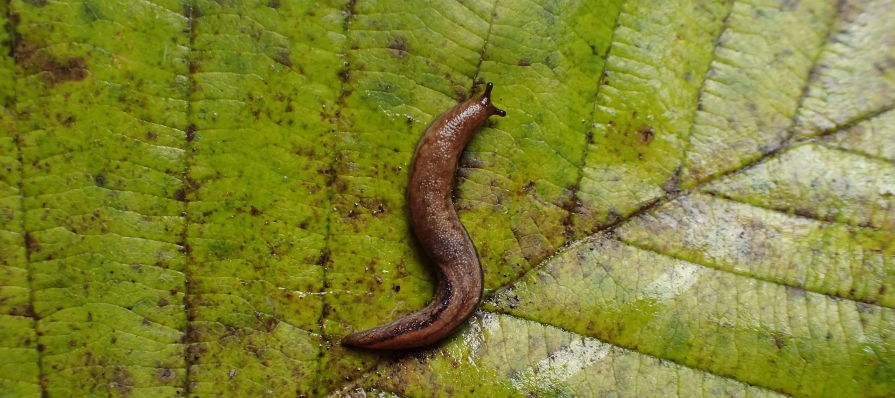

Studying diversification using genomic data.
Our research focuses on developing methods for analyzing genomic data in an evolutionary context, and applies these methods to the study of terrestrial mollusks. We evaluate existing methods and develop novel methods (including machine learning methods) for analyzing genomic data to answer questions about species diversification. We combine field, lab, and computational work to study diversification in terrestrial snails and slugs.

Research
Invasive Terrestrial Gastropods
We combine genetic, phenotypic, and ecological data to investigate the invasive histories and the factors promoting invasiveness in terrestrial snails and slugs.
Machine Learning in Population Genetics
We develop and test machine-learning approaches — including domain adaptation — for inferring evolutionary histories from genomic data.
Gene Duplication
We use gene duplicates to improve phylogenetic inference and develop methods for investigating the evolutionary dynamics, causes, and consequences of gene duplication and loss.
Speciation in Native Slugs
We study species limits and speciation in native terrestrial gastropods from North America.